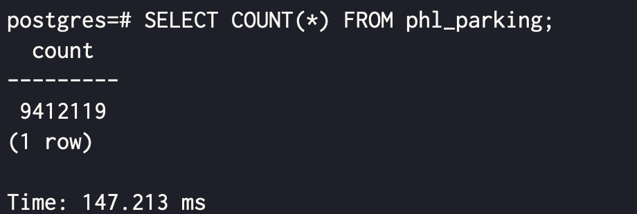
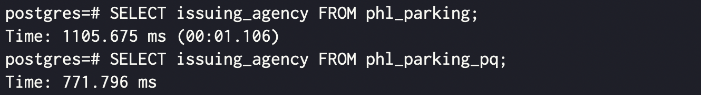
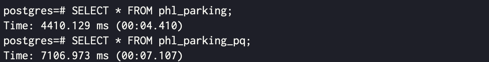

참고한 것들
개요
- Postgres 에서는 Parquet 를 native 하게 지원하지는 않고, 관련 extension 들도 좀 부실한 상황이다.
- 관련하여 서치를 해보자면, 보통 FDW (Foreign Data Wrapper) extension 을 사용한다.
- Crunchy data 블로그: 여기서는 Parquet FDW 를 사용하여 Postgres 에서 Parquet file 을 로드해 query 를 날려보는 짓을 해본다.
- Medium 블로그: 여기서는 DuckDB 에 Parquet file 을 로드하고 DuckDB FDW 를 이용해 Postgres 에서 DuckDB 에 query 를 날리는 짓을 한다.
- pg_parquet: 이놈은 Parquet 를 바로 사용하기보다는, Postgres 에 Parquet 를 import, export 하는 API 를 제공한다.
- parquet_s3_pg: 이놈은 JDBC 를 Postgres 에 FDW 로 노출시켜주는 놈인데, 여기에 Parquet 또한 지원하는 모양이다.
- 그래서 일단 저 Crunchy data 블로그 에서 한 작업을 재현해보기로 하자.
GTD: Get Things Done
Postgres 설정
- 여기서는 이 가이드 에서 설정한 Postgres 를 기준으로 합니당
Dataset (CSV)
- 데이터셋은 위 저자의 또 다른 블로그 글 에서 사용한 필라델피아의 주차 위반 데이터를 사용한다.
- 이건 이렇게 다운받으면 된다:
- 근데 좀 오래걸린다. 크기가 커서라기보다는 뭔가 네트워크가 느린듯
curl "https://phl.carto.com/api/v2/sql?filename=parking_violations&format=csv&skipfields=cartodb_id,the_geom,the_geom_webmercator&q=SELECT%20*%20FROM%20parking_violations%20WHERE%20issue_datetime%20%3E=%20%272012-01-01%27%20AND%20issue_datetime%20%3C%20%272017-12-31%27" -o phl_parking.csv- 그리고
psql로 session 에 접속한 뒤에 table 을 만들고,
CREATE TABLE phl_parking (
anon_ticket_number integer,
issue_datetime timestamptz,
state text,
anon_plate_id integer,
division text,
location text,
violation_desc text,
fine float8,
issuing_agency text,
lat float8,
lon float8,
gps boolean,
zip_code text
);- 다음과 같이 CSV 를 import 해주면 된다.
\copy phl_parking FROM 'phl_parking.csv' WITH (FORMAT csv, HEADER true);- 그리고 확인해 보면 잘 들어온다.
SELECT COUNT(*) FROM phl_parking;
Converting: CSV to Parquet
- 위 블로그에서는 GDAL 에서 제공하는
ogr2ogr이란 툴을 사용하는데, 해보니 Parquet 드라이버를 찾을 수 없다며 안된다. - 그래서 그냥
pyarrow와pandas로 변환 진행 - 일단
pyarrow하고pandas설치
Python venv
- 그냥
pip로 install 하면 global environment 라고 하며 안된다고 징징댄다.- 그래서 virtual environment
venv를 설정해주고 거기에서 설치하자.
/path/to/venv/bin/pip3 install pyarrow pandas- 그리고 이런 python script 를 짜주고
conv.py
import pandas as pd
csv_file = "/path/to/phl_parking.csv"
df = pd.read_csv(csv_file)
parquet_file = "phl_parking.parquet"
df.to_parquet(parquet_file, engine='pyarrow', index=False, compression=None)
print(f"CSV file converted to Parquet: {parquet_file}")- 이렇게 실행하면 됨
/path/to/venv/bin/python3 conv.py- 그러면 정상적으로 변환이 된다.
parquet_fdw 설치
- 우선 source code 를 clone 한다.
git clone https://github.com/adjust/parquet_fdw.git && cd parquet_fdw- Parquet 를 사용하기 위해서는 Apache Arrow 의
libarrow를 설치해야 한다. - 뭐 저기 document 가면 설치 방법이 있긴 하지만, Ubuntu 기준의 설치 스크립트가
parquet_fdw에 준비되어 있어 이걸 사용하자.- 여기 script 에는
sudo가 빠져있어서 그냥 실행하면 권한없다고 뜬다.
- 여기 script 에는
sudo bash -c './install_arrow.sh'- 그리고 다음 명령어로 compile 및 설치하면 된다.
make install PG_CONFIG=/path/to/pg_config- 여기서
PG_CONFIG는 이전 가이드 에서 Postgres 를 다른 위치에 설치했기 때문에 설정해주는 것이고, 기본 위치에 설치했으면 필요 없다. - 만약 다른 위치에 설치했다면, 해당 위치의
/bin/pg_config에 있다. - 그리고
psqlsession 에서 다음과 같이 해주면 정상적으로 extension 을 가져올 수 있다.- 여기서 server 는 FDW 로 데이터를 가져올 data source 정도로 생각하면 된다.
CREATE EXTENSION parquet_fdw;
CREATE SERVER parquet_srv FOREIGN DATA WRAPPER parquet_fdw;Import Parquet
- 그리고 요래 foreign table 을 생성하는 식으로 Parquet file 을 import 하면 된다.
CREATE FOREIGN TABLE phl_parking_pq (
anon_ticket_number integer,
issue_datetime timestamptz,
state text,
anon_plate_id integer,
division text,
location text,
violation_desc text,
fine float8,
issuing_agency text,
lat float8,
lon float8,
gps boolean,
zip_code text
) SERVER parquet_srv OPTIONS (
filename '/tmp/phl_parking.parquet',
sorted 'issue_datetime',
use_threads 'true'
);Evaluation
- 이제 몇가지 query 를 해보자.
- 일단 Parquet 는 PAX 이기 때문에 full column scan 에 강점을 가질 것이다.
SELECT issuing_agency FROM phl_parking;
SELECT issuing_agency FROM phl_parking_pq;
- 대신 여러 column 들을 조합해야 하는 경우에는 더 오래걸린다.
SELECT * FROM phl_parking;
SELECT * FROM phl_parking_pq;